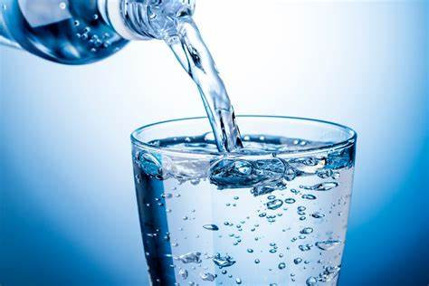
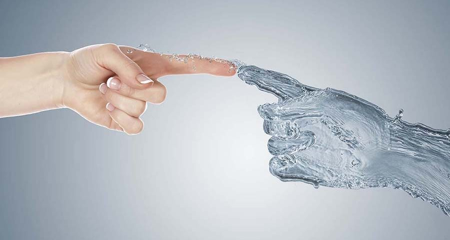
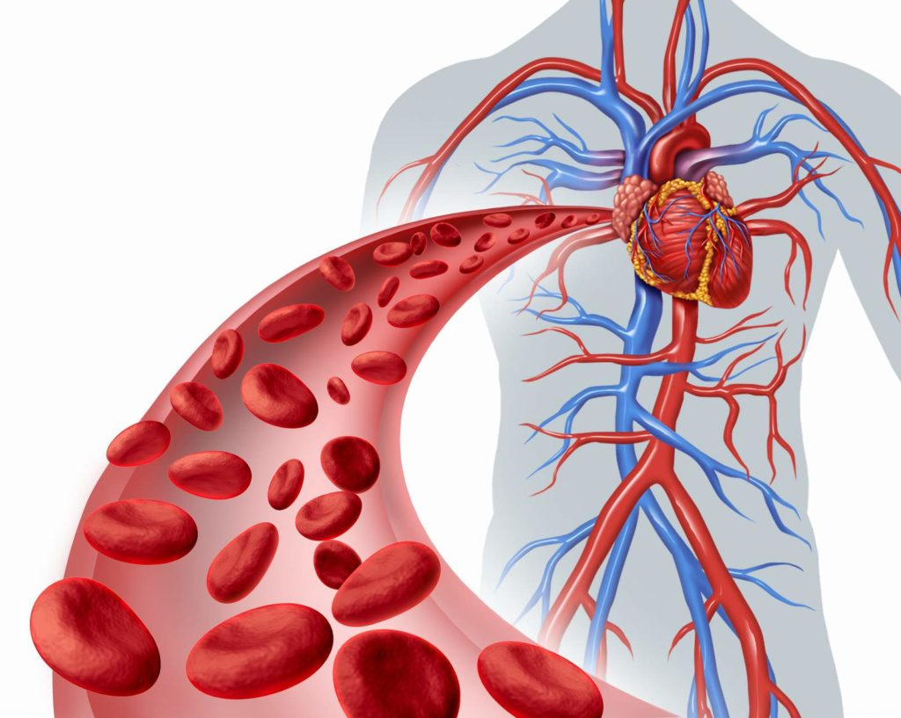

Algunos beneficios de tomar agua:
Hidratación eficiente
El agua es fundamental para mantener el equilibrio hídrico en el cuerpo, permitiendo el funcionamiento óptimo de todos los sistemas fisiológicos.
Salud de la piel
Mantenerse bien hidratado favorece la elasticidad de la piel, ayudando a reducir la aparición de arrugas y a mantener un aspecto saludable.
Mejor circulación sanguínea
El agua es crucial para mantener la sangre fluida y permitir una circulación eficiente, lo que a su vez beneficia a todos los órganos.